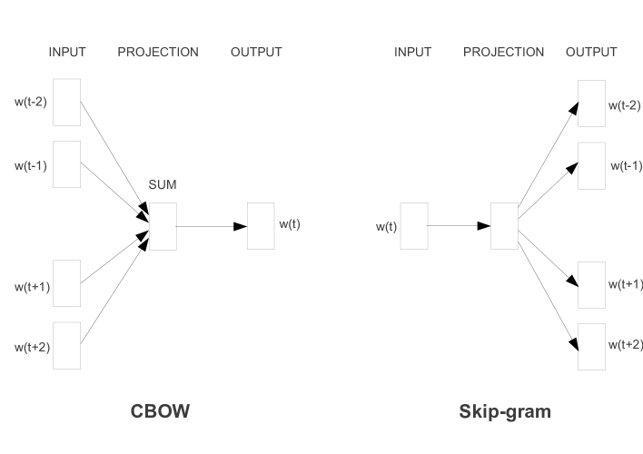

词嵌入与向量空间
分词把文本变成了一串整数——但这串数字本身不是信息，只是索引。真正让模型开始「理解」的那一步，是把每个 token id 变成一个稠密的实数向量，让意思相近的词在向量空间里也挨得近。这一节讲清楚三件事：这个向量从哪来、「距离近」在几何上到底意味着什么、以及这套几何直觉为什么同时是注意力机制和 RAG 的地基。
嵌入（Embedding）做的事情只有一步：用 token id 当行号，从嵌入矩阵里取出对应的那一行向量。这个矩阵不是人写给机器的——是模型在训练过程中自己学出来的。学完之后，这张表就成了一张「语义地图」：每个词都被放在地图上的某个位置，意思越像的词，位置越近。
1542"] --> LO["查表
取嵌入矩阵第 1542 行"] E["嵌入矩阵
V 行 x d 列
训练学出来的参数"] --> LO LO --> VEC["稠密向量
0.23 / -0.87 / 0.41 / ... / -0.11
共 d 维"] VEC --> T["流入 Transformer
逐层加工成上下文表示"] VEC --> R["或直接用于相似度检索
RAG 的入口"] style E fill:#e6f1fb,stroke:#185fa5 style VEC fill:#eaf3de,stroke:#639922
One-hot 为什么不行
先把问题翻译成生活场景：想象你要在一个班里区分几十个同学——one-hot 编码（独热编码，只有一个位置是 1、其余全 0 的表示方式）相当于给每人发一个「专属证件号」，号码之间没有任何规律可言；而嵌入（Embedding，把离散符号映射成稠密实数向量的技术）相当于把每个同学放在一张按性格铺开的地图上——爱说话的人聚在教室左边，爱安静的人聚在右边。前者只解决了「区分」，后者让「距离」本身变成了信息。这一节要讲清楚的就是：为什么后者才是语言模型真正需要的那张地图。
一个直接的想法：为什么不用 one-hot 编码？每个 token 用独热向量表示，词表有多大向量就有多长——「苹果」这行的第 3724 位是 1，其余全 0。这个方案的逻辑干净，但工程上完全不可行：
词表 128K 意味着每个输入 token 是一个 128K 维的向量，其中只有一个位置有用信号，其余 12.7 万个位置全是 0。存储和计算全浪费在这些零上。
任何两个不同的 one-hot 向量点积恒为 0，余弦相似度恒为 0，欧氏距离恒为 $\sqrt{2}$。「苹果」离「梨」和离「火山」一样远——空间里没有携带任何语义信息。
在「吃了三个苹果」上训练出的模式，对「吃了三个梨」毫无帮助——one-hot 让两个不同的词完全没有共享的参数通道，每个词都得从头学一遍。
| 对比维度 | One-hot 编码 | 稠密嵌入 |
|---|---|---|
| 维度 | 等于词表大小，如 128000 | 几百到几千，如 4096 |
| 非零元素 | 恒为 1 个 | 几乎全部维度都有值 |
| 是否需要训练 | 不需要，规则给定 | 需要，是模型参数的一部分 |
| 能否表达相似 | 不能，任意两词等距 | 能，距离直接反映语义关系 |
| 单个维度的含义 | 「是不是第 k 个词」，可解释但无用 | 不可单独解释，语义由多维组合共同决定 |
| 新增词表 | 整个向量长度改变 | 只需加一行，其余不变 |
神经网络解决这个问题的思路是把每个词映射到一个低维的稠密实数向量——通常是几百到几千维。这个向量不是手工设计的，而是训练出来的；每个维度不直接对应任何语言学特征，而是几十到几百个特征叠加在一起，共同决定向量指向空间里哪一个位置。
这就是分布式表示（Distributed Representation）——信息不是存在某一个维度上，而是分散在多个维度的组合模式中。同一个向量空间里，既可以编码词义（「猫」和「狗」距离近）、也可以编码语法角色（「吃」和「喝」行为相似）、还可以编码领域（「softmax」和「ReLU」聚在一起）。所有这些信息共享同一组维度，互不冲突——这正是稠密表示相对 one-hot 的根本优势：维度被复用了。
嵌入空间的几何：「语义相近」到底是什么意思
把嵌入空间想成一张城市地图：词是地标，语义相近的词是相邻的街区。你问「苹果离梨有多近」，不是在数两个编号的差，而是在地图上量两个地标的实际距离——这就是「用几何度量语义」的含义。这节所有内容，本质上都是围绕着「在地图上怎么量距离」这个日常问题展开的。
这一节是本页最重要的部分。「语义相近即距离相近」这句话听起来像口号，但它有非常具体的几何含义，而且这套几何直觉会一路用到注意力打分和 RAG 检索里。
性质一：方向编码语义，长度大多是噪声
在训练好的嵌入空间里，一个词的「意思」主要写在它的方向上，而不是长度上。原因很实际：一个词的向量长度往往和它的词频强相关——高频词因为被更新得多，范数通常更大——但词频跟语义没什么关系。所以比较两个词像不像，标准做法是把长度归一化掉，只看夹角，这就是余弦相似度：
| 度量 | 公式 | 取值范围 | 受向量长度影响 | 什么时候用 |
|---|---|---|---|---|
| 余弦相似度 | $\dfrac{a \cdot b}{\|a\|\|b\|}$ | $[-1, 1]$，越大越像 | 不受影响 | 语义检索的默认选择；文档长短不一时尤其稳 |
| 点积 | $a \cdot b$ | 无界 | 受影响，长向量占便宜 | 向量已做 L2 归一化时，它等价于余弦且更快；注意力打分用的就是它 |
| 欧氏距离 | $\|a - b\|_2$ | $[0, +\infty)$，越小越像 | 受影响 | 向量已归一化时与余弦单调等价；聚类场景常用 |
展开：归一化之后，余弦、点积、欧氏距离是同一件事
设 $\hat{a}, \hat{b}$ 都已归一化，即 $\|\hat{a}\| = \|\hat{b}\| = 1$。那么：
点积直接等于余弦：$\hat{a} \cdot \hat{b} = \dfrac{a \cdot b}{\|a\|\|b\|} = \text{cosine}(a,b)$。
欧氏距离的平方展开：
也就是说，余弦相似度越大，欧氏距离就越小，两者严格单调对应。所以在归一化之后，用哪种度量做「找最相似的 k 个」都会得到完全相同的排序结果。
这条结论有很实际的用处：如果你的向量库只支持内积索引，你完全可以先归一化再入库，效果和余弦索引一致。反过来，如果你没有归一化就用内积检索，长向量（往往是长文档或高频词）会被系统性地排在前面，这是一类很隐蔽的召回偏差。
性质二：方向差编码「属性变化」
嵌入空间最出圈的性质是向量算术：king − man + woman ≈ queen。在训练好的词向量空间里，把「king」的向量减去「man」再加上「woman」，得到的向量和「queen」非常接近。
几何上这说明了一件更深的事：「性别」这个属性在空间里近似对应一个固定的方向。从 man 指向 woman 的那个位移向量，和从 king 指向 queen 的位移向量近似平行。同理，「单数→复数」「原型→过去式」「国家→首都」也各自对应一族近似平行的位移。语义关系被编码成了空间中的平移。
性质三：真实的嵌入空间是「歪」的
教科书插图里的嵌入空间总是均匀铺开的，但真实训练出来的空间往往各向异性（anisotropy）——所有向量挤在一个狭窄的锥形区域里，导致任意两个随机词的余弦相似度都偏高（比如普遍在 0.6 以上）。
这带来的直接后果是：你在做检索时会发现「什么都挺像的」，相似度分数区分度很差，很难设一个固定阈值来判断「够不够相关」。常见的应对有三种：
- 只看排序不看绝对值：取 Top-K，不设绝对阈值。这是最省事也最稳的做法。
- 后处理校正：对全体向量做中心化（减去均值）或白化，把分布拉圆。代价是要先见到一批代表性数据。
- 换专门训练的嵌入模型：用对比学习训练的句嵌入模型（把正样本拉近、负样本推远）天然缓解了这个问题，这是今天 RAG 场景的主流做法。
词向量是怎么学出来的
Word2Vec：从上下文中学分布
2013 年 Mikolov 等人提出的 Word2Vec 不是最早的词嵌入方法，但它第一次让「词嵌入有用」这件事为工业界所广泛接受。它的关键贡献其实是把训练成本压到了可以在普通机器上跑完整个维基百科——用两个极其简单的浅层任务替代了完整的语言模型。要理解它为什么高效，最好的方式不是背公式，而是直接看作者论文里的那张原图——两种任务的架构对比，一个方向相反，一个换来完全不同的性质。

新手读这张图，先抓三个要点。第一，图的上下两半是两种「反向」的任务：上半部 CBOW（Continuous Bag-of-Words，连续词袋模型，Bag-of-Words 指「只关心有哪些词、不关心顺序」）是「用周围猜中间」——输入是上下文词 $w_{t-2}, w_{t-1}, w_{t+1}, w_{t+2}$，输出的预测目标是中心词 $w_t$；下半部 Skip-gram（跳字模型，字面意思是「跳过中间的词去预测周围的词」）则完全反过来，「用中间猜周围」——输入是中心词，输出是它周围每个位置上该出现的词。图里左边那一列不同颜色的方块，就是每个词对应的词向量，它们分别被喂进去、参与计算。
第二，也是最容易看漏的一点：图中间的 W 和 W' 是两套矩阵。W 是「输入向量」表，W' 是「输出向量」表——一个词在作为上下文出现和作为预测目标出现时，用的是两套不同的向量。训练结束后一般取输入矩阵 W（有些实现把两套平均），因为它在预测时承担主要的信息编码角色。这个「一分为二」的设计在后来所有神经语言模型里都延续了下来。
第三，注意每个输入词都被「平均」或「独立对待」。CBOW 把窗口内所有词的向量平均成一个向量再往后算——这就是它速度快的来源，但也让低频词的信息被平均稀释；Skip-gram 把中心词的向量分别对着每个输出位置做一次预测——同一对「中心词—周围词」的样本会被复用多次，所以低频词能得到更多打磨。理解了图上这两个细节，后面那张 CBOW vs Skip-gram 对比表里的每一行（样本数、速度、低频词质量）你都能自己推出来，不用背。
今天 天气 真 不错 啊"] S --> C1["CBOW 模式"] S --> C2["Skip-gram 模式"] C1 --> CB1["输入 周围词
今天 天气 不错 啊"] CB1 --> CB2["把周围词向量取平均"] CB2 --> CB3["预测中心词 真"] C2 --> SG1["输入 中心词 真"] SG1 --> SG2["分别预测每个周围词"] SG2 --> SG3["今天 / 天气 / 不错 / 啊
一个中心词产生多条训练样本"] CB3 --> L["同一个嵌入矩阵被反复更新
训练结束后它就是词向量表"] SG3 --> L style C1 fill:#e6f1fb,stroke:#185fa5 style C2 fill:#eaf3de,stroke:#639922 style L fill:#faeeda,stroke:#ba7517
| 维度 | CBOW | Skip-gram |
|---|---|---|
| 预测方向 | 周围词 → 中心词 | 中心词 → 周围词 |
| 每个窗口产生的样本数 | 1 条 | 等于窗口内的周围词个数 |
| 训练速度 | 更快 | 更慢 |
| 低频词质量 | 一般（会被周围词平均稀释） | 更好（每次出现都能贡献多条样本） |
| 适用场景 | 语料很大、以高频词为主 | 语料中等、关心长尾词 |
两种方法的共同假设是分布假设（Distributional Hypothesis）：一个词的意思可以从它经常出现的上下文推断出来。「你去超市能顺路买个 ___ 吗」，只凭上下文你已经知道这个空里大概率是某种日用品——Word2Vec 学会的就是这个直觉。
还有两个让它跑得动的工程技巧值得一提：负采样把「在整个词表上做 softmax」换成「区分 1 个真实词和少量随机采的假词」，把每步的计算量从词表规模降到常数级；高频词下采样则按概率丢弃「的」「是」这类几乎不携带信息的词，既提速又让低频词获得更多相对权重。
GloVe：把全局共现也放进来
Word2Vec 的一个局限是只用到了局部窗口内的共现信息——每个训练样本只看中心词周围几个位置，全局的统计规律要靠海量样本间接「碰」出来。GloVe（Global Vectors）补上了全局视角：先构造一个全局词共现矩阵 $X$，其中 $X_{ij}$ 表示词 $i$ 和词 $j$ 在整个语料里共同出现的次数，然后直接在这个矩阵上做拟合。它的目标函数大致是：
拆开看：括号里是「两个词向量的点积」去逼近「它们共现次数的对数」——也就是说，共现越频繁的一对词，点积越大，这正好把统计关系直接铸进了几何关系。而 $f$ 是一个权重函数，让极高频的共现对（如「的」和几乎一切词）不至于主导整条 loss，同时让只共现过一两次的噪声对权重接近 0。
现代 LLM 的嵌入层
把 Word2Vec 那套「独立训练的词向量表」想象成一个入职前就定好身份的人事档案——档案内容固定，谁来都发同一份；而现代 LLM 的嵌入层更像在岗培训——入职时给一个初始档案，之后每做一件事（训练中的每一步），档案都会被工作本身修改。这一节要讲清楚的就是：今天的嵌入层和 Word2Vec 相比，发生了什么本质变化，以及这些变化带来的工程后果。
今天你用的 GPT、Llama、Qwen——它们确实有一个嵌入层，但它和 Word2Vec 有本质区别：
| Word2Vec / GloVe | 现代 LLM 嵌入层 | |
|---|---|---|
| 训练方式 | 独立训练，面向特定任务（词类比、相似度） | 嵌入层就是模型的第一层参数，随整个模型的预训练目标端到端更新 |
| 基本单位 | 词（依赖外部分词，未登录词直接没有向量） | 子词 token（见 词元化），任何输入都能表示 |
| 维度 | 通常 100-300 维 | 等于模型的隐维度，常见几千维量级 |
| 语义 | 一个词一个固定向量 | 一个 token 一个初始向量，但经过多层 Transformer 加工后，同一个 token 在不同上下文里会变成完全不同的表示 |
| 产出 | 词嵌入矩阵，可直接用于检索 | 嵌入层只是输入表示，真正有检索价值的向量通常取中间或最后一层的隐状态，而不是输入嵌入 |
静态嵌入 vs 上下文嵌入
这是理解现代表示学习的分水岭。看这两句话里的「苹果」：
- 「他咬了一口苹果，很甜。」
- 「苹果发布了新款芯片。」
Word2Vec 给这两个「苹果」的是同一个向量——它只能把水果义和公司义混在一起算个平均，两边都不讨好。而 Transformer 的做法是：输入嵌入层确实给出同一个起点向量，但注意力会让这个向量去吸收上下文——第一句里它会大量融合「咬」「甜」，第二句里会融合「发布」「芯片」。走完几十层之后，两个「苹果」的表示已经指向空间里完全不同的区域。
换句话说：静态嵌入是「词典里的义项平均」，上下文嵌入是「这一次具体用的是哪个义」。这个从静态到动态的转变，正是 注意力机制 带来的最直接收益。
嵌入矩阵到底是怎么被训练出来的
「查表」这个说法容易让人以为嵌入层没有反向传播，其实恰恰相反——它是整个模型里梯度最稀疏的一层，而这个稀疏性会带来一系列很实际的后果。
机制是这样的：前向时用 token id 取出第 $i$ 行；反向时，损失对这一行的梯度会原样累加回矩阵的第 $i$ 行，其余所有行的梯度严格为零。也就是说，一个 token 只有在这个 batch 里真的出现过，它的向量才会被更新一次。做个能算的估计：假设词表 $V=128\text{K}$、每步喂进去 4096 个 token，即使这 4096 个 token 全不重复，这一步也最多只更新了 $4096/131072 \approx 3.1\%$ 的行；实际语料里高频词反复出现，真正被碰到的不重复行数往往只有一两千。
把这个比例乘到整个训练过程上，结论就很清楚了：一个 token 在语料里出现多少次，它的向量就被打磨多少次。「的」「is」这类词一轮就被更新上亿次，向量早已收敛到语义空间中该在的位置；而某个只在训练语料里出现过三五次的罕见 token，它的向量几乎还停留在随机初始化的状态——方向是随机的，范数往往异常小。这类「没被训熟」的向量在推理时会表现得非常怪：一旦它出现在输入里，模型可能给出与上下文完全无关的输出，社区里俗称的「异常 token」大多是这么来的。这也从另一个角度解释了上一页的结论——词表不是越大越好，因为多出来的那部分 token 很可能根本没有足够的数据把它们喂熟。
还有一个容易被忽略的细节：嵌入的初始化尺度。嵌入向量通常从一个方差很小的正态分布初始化，而后续层的激活值尺度是由归一化层控制的。原始 Transformer 论文里在嵌入之后乘了一个 $\sqrt{d_{\text{model}}}$ 的缩放因子，目的就是让嵌入的量级和位置编码、以及后续层的期望输入量级对得上。尺度没对齐会怎样？要么位置信息被词义信息淹没，要么反过来，训练初期的收敛会明显变慢。
权重绑定：入口和出口能不能共用一张表
模型有两处用到「词表 × 隐维度」这么大的矩阵：入口的嵌入层 $E \in \mathbb{R}^{V \times d}$，和出口把隐状态投影回词表 logits 的矩阵。一个很自然的问题是——它们能不能是同一张表？
答案是可以，这就是权重绑定（weight tying）：输出 logits 直接算成 $\text{logits} = h E^\top$。几何上它其实很讲道理：嵌入的第 $i$ 行表示「token $i$ 的语义方向」，而输出层要问的问题是「当前隐状态 $h$ 有多像 token $i$」——这恰好就是 $h$ 和第 $i$ 行做点积。同一套方向，一次用来编码，一次用来打分。
收益是实打实的。还是取 $V=128\text{K}$、$d=4096$：绑定后省下的参数是 $131072 \times 4096 \approx 5.4$ 亿，按 FP16 每参数 2 字节算，就是约 1.07 GB 显存——对一个 7B 级别的模型来说，这相当于总参数量的 7% 以上。对更小的模型，这个比例还会更夸张。
代价则在于它强行让两个角色共用一组向量。输入侧希望「语义相近的词向量相近」，输出侧希望「容易混淆的词能被分开」，这两个诉求并不总是一致。经验上，模型越小、数据越少，绑定带来的正则化收益越明显；模型足够大之后，解绑（untied）让两侧各自优化往往效果更好。所以你会看到不同模型家族在这件事上的选择并不统一——这是个典型的「参数预算 vs 表达自由度」权衡，没有普适答案，取决于模型规模和词表大小的比例。判断的经验法则是：当 $2Vd$ 占到总参数的两成以上时，绑定几乎总是划算的。
展开：踩坑实录——「从模型里抠嵌入向量做检索」为什么必然翻车
这是 RAG 项目里出现频率最高的一类误解。很多人读完「嵌入层把词变成向量」之后，会直接写一行代码：model.get_input_embeddings()，把权重矩阵导出来，当成语义检索的向量库去用。结果通常是检索结果一塌糊涂——跟语义完全无关的文本经常排在最前面。
问题出在三个层面。第一，输入嵌入是上下文无关的：它只是查表结果，两个不同句子里的同一个「苹果」拿到的是同一行向量，任何多义词义项都是被「平均」掉的，检索时自然找不到你真正想要的义项。第二，输入嵌入的分布与检索期望不匹配：LM 的输入嵌入经过了 $\sqrt{d_{\text{model}}}$ 缩放和大量权重绑定约束，其向量范数、方向分布和专门用对比学习（Contrastive Learning，把正样本对拉近、负样本对推远的训练方式）训出来的句向量分布完全不同——拿它做内积排序，结果毫无区分度。第三，它按 token 给向量，不是按句子：你得自己决定怎么把一串 token 的向量池化成一个句子向量，这个「池化」步骤的选择（平均？取首 token？）对结果的影响往往比嵌入本身还大。
正确做法是二选一：要么用一个专门训练过的嵌入模型（如 Sentence-BERT 一系的模型，见 arXiv:1908.10084），要么取 LLM 深层隐状态做池化。判断标准很简单：先拿几个明知语义相近/相远的小样本测一遍排序，如果相近的都排不到一起，说明这条向量来源根本不适用——不要在生产环境里赌它会「凑巧」好用。
动手：十几行做一次向量检索
把前面的几何直觉落成代码。这段程序演示了归一化、余弦相似度、Top-K 最近邻——它就是所有向量数据库内核在做的事（真实系统只是加了近似索引来避免全量扫描）。
import numpy as np
# 假设这是某个嵌入模型输出的 5 条文本向量,维度 d=8
rng = np.random.default_rng(0)
docs = ["猫在沙发上睡觉", "小狗在院子里跑", "今天股市大跌",
"央行宣布降息", "沙发是新买的"]
X = rng.normal(size=(len(docs), 8)) # (N, d) 真实场景由嵌入模型给出
def l2_normalize(a, axis=-1, eps=1e-12):
"""把每个向量的长度缩到 1,之后内积就等价于余弦相似度"""
norm = np.linalg.norm(a, axis=axis, keepdims=True)
return a / np.maximum(norm, eps)
Xn = l2_normalize(X) # 入库前统一归一化
def search(query_vec, top_k=3):
q = l2_normalize(query_vec.reshape(1, -1))
sims = (Xn @ q.T).ravel() # 一次矩阵乘算完全库相似度
idx = np.argsort(-sims)[:top_k] # 取分数最高的 k 条
return [(docs[i], round(float(sims[i]), 4)) for i in idx]
q = rng.normal(size=8) # 真实场景是把查询语句喂给同一个嵌入模型
for text, score in search(q):
print(f"{score:+.4f} {text}")
# 验证:归一化后,余弦相似度与欧氏距离严格单调对应
a, b = Xn[0], Xn[1]
cos = float(a @ b)
euc = float(np.linalg.norm(a - b))
print(round(cos, 6), round(euc ** 2, 6), round(2 - 2 * cos, 6)) # 后两个必然相等
三个细节值得留意。第一，查询和文档必须用同一个嵌入模型编码，否则两套向量根本不在同一个空间里，相似度毫无意义。第二，归一化要在入库前做完，检索时只归一化查询即可，省掉大量重复计算。第三，最后三行验证了前面那条推导：euc² == 2 - 2·cos 精确成立，所以选哪种度量排序结果都一样。
从词向量到 RAG：同一套几何，换个尺度用
词嵌入解决的是「词」的语义距离；把同一个思路放大到「句子」和「文档」，就是检索增强生成（Retrieval-Augmented Generation，RAG，先检索相关资料再让模型作答的架构）。类比一下：前面那张地图量的是地标之间的距离，RAG 量的是整片街区之间的相似度——尺度变了，量法却一模一样。这也是为什么这一节要放在本页而不是检索那篇：RAG 的全部地基，就是本页第一节讲的那一条几何性质。
词嵌入的思想放大到句子和文档，就是今天检索增强生成的地基。做法上多了一步池化：模型对一段文本输出的是「每个 token 一个向量」，要得到「整段文本一个向量」，就得把它们合成一个——常见做法是取平均（mean pooling）、取某个特殊位置的向量，或者用专门用对比学习训练过的嵌入模型直接输出。
池化这一步的差异，值得用一个具体数字感受。假设一段文本有 64 个 token，每个 token 的向量是 768 维。取平均池化：把 64 个向量逐维求平均，得到一个 768 维向量——这个过程没有引入任何可训练参数，只是把「64 条语义线索」压缩成「一条平均线索」。而如果改用「取首 token 向量」：结果向量直接就是某个 token 的嵌入，其他 63 个位置的信息全部丢弃。这两种池化对同一段文本给出的句子向量可以差得很远——前者稳健但可能把强信号稀释，后者保留首 token 的强信号但依赖「首 token 恰好是重要词」这个假设。今天多数专用嵌入模型选择在末尾加一个聚合位置（如 [CLS]），本质上是在「平均」和「取单点」之间取了个折中。
向量维度的选择在这里会变成实打实的成本。同样一百万条片段，用不同维度的嵌入模型，光是存原始向量的开销就差一个数量级：
按 100 万条向量、FP32 每维 4 字节、$1\,\text{GB} = 10^9$ 字节计算的原始向量存储量（不含索引结构与原文）。这是纯乘法推算：维度翻倍，存储和检索计算量都翻倍。所以「维度越高越好」在工程上不成立，很多嵌入模型提供可截断维度正是为此。
要点速查
- 本质：把离散的 token id 映射成稠密实数向量，让模型可以在连续空间里做计算。查表本身零计算，智能全在「表里填什么」。
- One-hot 三大硬伤：维数灾难、语义等距（苹果和火山一样远）、零泛化（不同 token 之间无参数共享）。
- 分布式表示：语义不写在单个维度上，而是分散在多维组合里——同一组维度被复用来编码词义、语法、领域等多种信息。
- 几何性质一：语义主要写在方向上，长度多与词频相关。所以默认用余弦相似度。
- 几何性质二：属性变化对应固定方向的位移，这就是 king − man + woman ≈ queen 的来源。但它是演示，不是工程依据。
- 几何性质三：真实空间各向异性，随机两个词的余弦也偏高。所以看排序不要看绝对阈值。
- 归一化之后三种度量等价：$\|\hat a - \hat b\|^2 = 2 - 2\cos$，排序结果完全一致。标准做法是「先 L2 归一化，再用内积」。
- Word2Vec：CBOW（周围猜中心，快）与 Skip-gram（中心猜周围，长尾词更好）。靠负采样和高频词下采样才跑得动。
- GloVe：让词向量点积去逼近共现次数的对数，把全局统计直接铸进几何。
- 静态 vs 上下文：Word2Vec 给「苹果」一个平均义项；Transformer 让它在不同句子里指向不同区域。别拿输入嵌入矩阵去做检索。
- RAG 地基：离线建库 + 在线最近邻，全靠「语义近 = 方向近」这条性质。换嵌入模型要全库重建。
参考文献与延伸阅读
- Efficient Estimation of Word Representations in Vector Space（Mikolov et al., 2013）— Word2Vec 的原始论文，提出 CBOW 与 Skip-gram 两种训练模式 · arXiv:1301.3781
- Distributed Representations of Words and Phrases and their Compositionality（Mikolov et al., 2013）— 负采样与高频词下采样的出处，也是让 Word2Vec 能在大语料上跑通的关键工程技巧 · arXiv:1310.4546
- GloVe: Global Vectors for Word Representation（Pennington et al., 2014）— 全局共现矩阵拟合的方法与官方预训练向量下载 · nlp.stanford.edu/projects/glove
- Deep Contextualized Word Representations（Peters et al., 2018）— ELMo 论文，第一次系统论证「同一个词在不同句子里应该有不同向量」 · arXiv:1802.05365
- Sentence-BERT: Sentence Embeddings using Siamese BERT-Networks（Reimers & Gurevych, 2019）— 句子级嵌入的代表工作，说明了为什么做检索要用专门训练的嵌入模型 · arXiv:1908.10084
- MTEB: Massive Text Embedding Benchmark（Muennighoff et al., 2022）— 嵌入模型的综合评测基准，选型时可用来横向对比 · arXiv:2210.07316